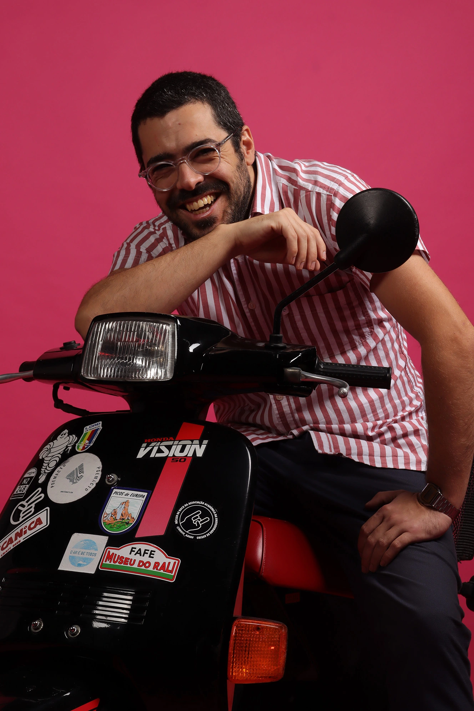

Quem Sou
Tiago Duarte Costa
35 anos
Lisboa // Aveiro
Formação
Lic. em Multimédia e Tecnologias de Comunicação
Interesses
Cultura
Mundo Automóvel
Procuro
Continuar a explorar o ramo da Comunicação Audiovisual.
Desafios Profissionais no Sétor Automóvel na área de Comunicação de Marca, ou Acompanhamento Personalizado no Canal Premium.
